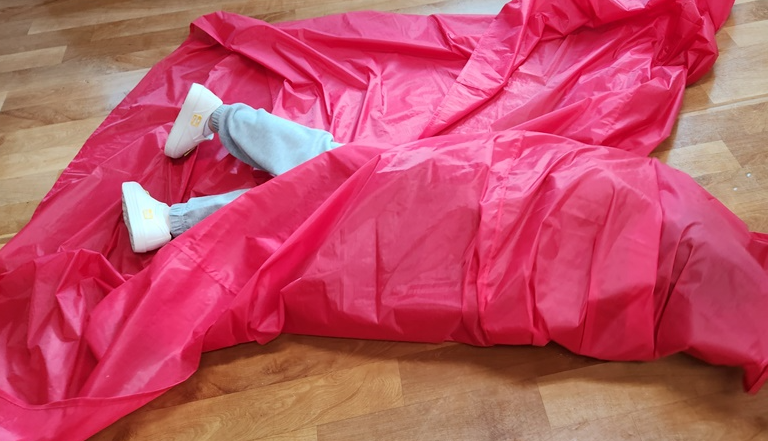

진수는 초등학교 3학년 외동아들로 맞벌이 부모의 상황에서 주로 외할머니의 양육을 받아 성장해왔다. 외할머니의 엄격한 양육 태도로 인해 진수는 건강과 학업에서는 우수한 성과를 보이지만, 정서적 및 사회적 발달에서는 다양한 문제를 드러내고 있다. 진수는 학교에서 집단활동에서 자신의 의견을 나타내기보다 방해를 하기, 맘에 들지 않으면 욱하여 화를 내거나 욕하기, 배려하지 않음 등 자기는 우월해야 한다는 자기중심성이 매우 강한 성격을 나타내고 있다. 할머니와 엄마는 진수가 집에서 착하고 아무일 없다고 하면서 학교에서 담임이 문제라고 신경질적으로 말하기 때문에 학교에서 걱정을 많이 함.
이에 따라 진수의 정서적 특징과 사회적 특징을 구체적으로 살펴보고자 한다.

1. 정서적 특징
1) 아동은 자신의 감정 조절에 어려움을 겪고 있다.
2) 자신의 기대에 부합하지 않는 상황에서는 즉각적으로 화를 내거나 욕설을 사용한다.
3) 자신이 우월해야 한다는 강한 자기중심적 성향을 가지고 있다.
4) 실패나 좌절을 경험했을 때 극심한 정서적 불안을 많이 느낀다.
5) 자신의 감정에 대한 인식과 표현이 미숙하며, 타인의 감정에 공감하거나 배려하는 능력이 부족하다.
6) 가정과 학교에서의 모습이 이중적으로 나타나며, 이는 내면의 정서적 갈등과 불안을 시사한다.
아동은 가정에서 순종적이고 문제가 없는 것처럼 행동하지만, 이는 외할머니의 엄격한 양육 스타일에 따른 외적인 순응일 가능성이 높으며 내재된 불안과 갈등이 다분하다.
2. 사회적 특징
1) 집단 활동에서 협력보다는 방해 행동을 보이며, 자신의 의견을 표현하기보다는 상황을 통제하려는 경향이 있다.
2) 또래와의 상호작용에서 타협과 양보를 하지 않고, 자신의 의견을 강하게 주장하여 갈등을 유발한다.
3) 배려나 공감의 행동을 보이지 않으며, 이러한 행동으로 인해 또래들로부터 부정적인 평가를 받을 가능성이 크다.
4) 또래 관계에서 지배적인 위치를 차지하려 하지만, 실제로는 관계 형성에 어려움을 겪고 있어 또래 집단 내에서 소외될 위험이 존재한다.
5) 학교에서 교사와의 관계에서도 반항적이거나 권위에 저항하는 태도를 보이며, 학교 적응에 부정적인 영향을 미친다.
3. 결론
상담 결과 아동의 정서적, 사회적 특징은 외할머니의 엄격한 양육 스타일과 부모의 부재 속에서 형성된 내적 불안과 자기중심적 사고에서 기인한 것으로 보인다. 이러한 아동의 특성들은 학교에서의 또래 관계뿐만 아니라 교사와의 관계에서도 부정적인 영향을 미치며, 장기적으로 아동의 전반적인 사회적 적응과 정서적 안정에 부정적인 결과를 초래할 수 있다. 이에 따라 진수에게는 정서적 안정과 공감 능력을 키울 수 있는 개별적 상담과 사회적 기술 훈련이 필요할 것으로 판단된다.
2025.01.19 - [이론] - 초등3학년 학교 적응 문제와 또래 관계 향상 도모
초등3학년 학교 적응 문제와 또래 관계 향상 도모
초등학교 3학년은 학업과 사회적 관계에서 중요한 전환점에 위치한 시기로, 이 시기 초등 학생들은 학교 적응과 또래 관계에서 다양한 도전을 경험한다. 학교 환경에서의 적응력과 또래 관계의
think-sis.co.kr